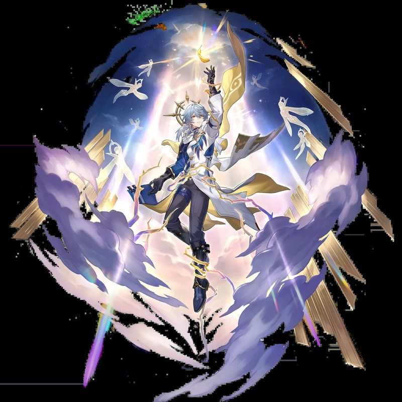

你触碰一个生物，圣光通过你的手掌流入对方身体。目标立即恢复 2d4 点生命值。该能力每天只能使用一次（长休后恢复）。
你以附赠动作激活体内的天界之力进行变身，持续1分钟。变身期间每回合一次，当你对目标造成伤害时，可以额外附加 3 点光耀伤害（等于你的熟练加值）。每天只能使用一次。
天启变身激活后，你的背部会张开一对由灵光构成的翅膀。你获得与你的步行速度相同的 飞行速度（30尺）。
乐器训练。你获得三种乐器的熟练项。无论走到哪里，你都带着它们，音乐是你与生俱来的天赋。
鼓舞之歌。每次短休或长休结束时，你可以演奏一首充满力量感的歌曲。最多 3 名同伴（等于你的熟练加值）听到后获得英雄激励——他们可以重骰一次d20检定，必须使用新结果。
属性值提升。你的魅力+1（提升至 20），你的领袖气质更加耀眼。
激励演出。短休或长休结束时，你发表一场激昂的演讲、一首振奋人心的歌曲或一段优雅的舞蹈。最多 6 名在30尺内观看你表演的盟友获得临时生命值，数值等于你的角色等级（6） + 你的魅力调整值（5） = 11点。
你曾组织过美梦节的游行，梦之女神蕾拉的祝福仍在你身上流淌。当你或距离你 30 尺 内的所有盟友进行豁免检定时，可以 投掷两次并使用较高的结果。每天一次。
以附赠动作，你选择 30 尺 内一个你能看见的同伴，用音乐或话语点燃对方的斗志。对方获得一枚 诗人激励骰（d8），在 10 分钟 内可进行属性检定、攻击检定或豁免检定前声明使用。对方可以使用该骰子掷出的结果加到 d20 结果上。
见多识广、技能驳杂。对于任何你没有熟练项的属性检定，你仍可将熟练加值的一半（+1）加入检定结果。
你在以下两个技能上投入了大量练习，获得双倍熟练加值（+6）：
游说 —— 你的话语能打动最顽固的心。
表演 —— 你的音乐和舞台表现无可挑剔。
你的音乐与法术如此紧密地编织在一起，以至于同伴的灵感也可以成为你施法的催化剂。当一个同伴使用了你的诗人激励骰进行检定后，你可以立刻以一个反应施放一个法术。
当你施放一个消耗法术位且施法时间为一个动作的法术时，可以额外消耗一次诗人激励次数，根据法术学派触发不同的额外效果：
641金币 钢琴里拉琴鲁特琴 风笛提琴鼓 皮甲两把匕首 艺人套装旅行背包 2瓶治疗药水 雷石×1
佩戴者获得对火焰伤害的抗性（火焰伤害减半）。
这把精美的里拉琴以秘银弦线制成，琴身雕刻着古老的音符与星辰图案，在月光下会微弱发光。它是吟游诗人乐器的一种——这类魔法乐器无论在音色还是附魔上都远超普通乐器。
同调限定：只有吟游诗人可以与之同调。未同调的生物若尝试弹奏，会感到尖锐的刺痛穿透指尖——必须通过感知豁免（DC 15），否则受到 2d4 心灵伤害。
乐器法术（每日各一次）：每道法术以演奏形式施放——指尖拨动琴弦，魔力化作旋律流出。每个法术每日只能使用一次，次日黎明恢复所有充能。
一颗拳头大小、表面有裂纹的灰色石头。投掷至 20 尺 内一点，撞击坚硬表面后发出震耳欲聋的巨响。10 尺 半径内所有生物必须通过 体质豁免（DC 15），否则陷入 耳聋 状态 1 分钟——耳聋期间所有豁免检定承受劣势。每个回合结束时耳聋者可以重新尝试豁免，成功则结束。
星期日出生于卡林港的橡木密教，一个世代侍奉梦女神蕾拉的神裔家族。天生能听见他人心底的软弱、触碰梦境的涟漪。他有一个妹妹——知更鸟，她的歌声像星光一样能平息最狂乱的噩梦。
童年平静而温柔：练钢琴、学梦境聆听、帮母亲打理花园、和妹妹在卡林港的阳光下喂鸽子。母亲常说："我们橡木之人，是梦的牧者，要安抚痛苦，而非制造枷锁。"
直到一颗异界星辰砸进卡林港大剧院——街区崩塌、梦境失控，人们溺死在自己的恐惧中。母亲为护住他与妹妹，在梦境裂隙中消散。一夜之间成了孤儿，被密教家主歌斐木收养。歌斐木严厉却公正，教星期日编织梦境、安抚幻惑、治愈圣光，称他为"铎音"——梦之倾听者。
星期日开始在卡林港的底层行走：贫民窟、奴隶市场、逐梦人的小巷。他听见工人的疲惫、孤儿的哭泣、难民的绝望——而神明从不回应，贵族视而不见。一颗阴霾的种子由心而发：温柔救不了人，善良挡不住痛苦。
一只断翅白鸽。妹妹说："治好它，让它飞，自由比安稳重要。"白鸽飞走，却坠死在他们窗前。星期日开始在书本里寻找答案：梦界理论、秩序典籍、古代神谕。如果不能消除痛苦，那就给他们一个没有痛苦的梦；如果自由带来伤害，那就给他们安全的牢笼。
16岁那年，妹妹受邀前往深水城巡演。星期日也离开卡林港，带着乐器、日记本和妹妹的照片，出发去寻找"既能保护弱者、又不剥夺自由"的答案。
彼时的他，非独裁者，非家主，亦非梦之暴君——只是一个想治愈世界、却尚未找到方法的少年阿斯莫。